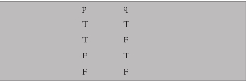
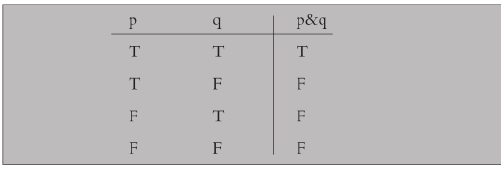
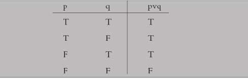
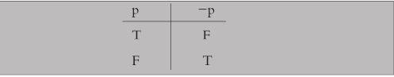
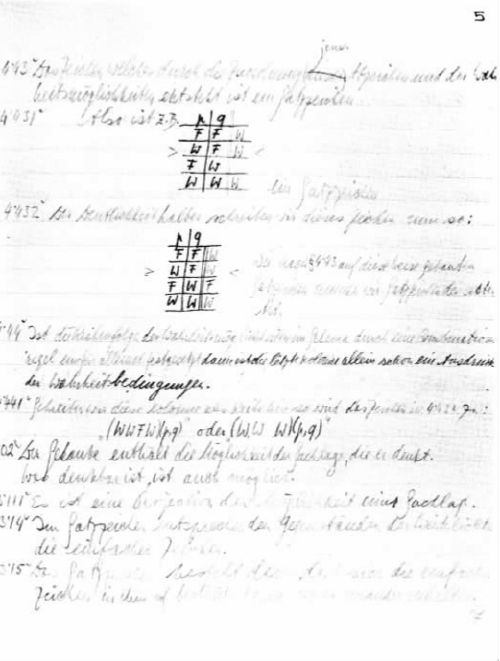
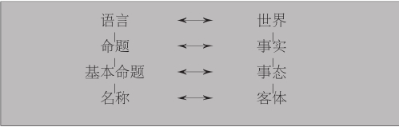

在本章中我将讨论维特根斯坦的早期哲学著作《逻辑哲学论》。评析维特根斯坦这本书的主要学说会使他的后期哲学容易理解得多。
第2、3两节专讲《逻辑哲学论》本身。第1节说明几件背景事实，它们将使《逻辑哲学论》更容易理解。本章结尾（第4节）则就维特根斯坦的早期著作对其他哲学家产生的影响作出一些论述。
第1节的背景描述虽然旨在为讨论《逻辑哲学论》作一般性的准备，却特别是为刚刚接触哲学的读者而写的。它谈到逻辑和哲学中的某些专门概念，后者在维特根斯坦的早期思想中起着重要的作用。我将以直截了当的方式阐述这些概念。
维特根斯坦在《逻辑哲学论》的序言中讲明了该书的写作目的，即要表明哲学问题可以通过正确理解语言如何起作用而得到解决。他的说法就是当我们理解了“语言的逻辑”时，我们就将解决哲学问题（《逻辑哲学论》第3—4页）。这确实是维特根斯坦全部哲学的中心思想，代表了其早期与后期哲学中一脉相承的部分。然而正如我们将看到的，维特根斯坦关于“语言的逻辑”的看法在两个阶段中有着明显的不同，后期思想就建立在对前期某些最重要思想的否定上。
正如刚才所说，维特根斯坦的目的包括两个方面。他的目标是解决哲学问题 ，他想通过显示语言怎样起作用 来做到这一点。为什么理解语言会解决哲学问题正是《逻辑哲学论》所要阐明的，这也正如他的后期哲学以不同方式所做的那样。我们不久便将讨论这个阐述过程。首先，我们必须弄清“哲学问题”这个短语表示什么意思。
人们可以将哲学描述为这样一种努力，即澄清和尽可能回答一系列根本性的和令人困惑的问题，这些问题产生于我们想从总体上全面理解自己和所居住的世界的时候。这些问题主要涉及存在与实在、知识与信念、理性与推理、真理、意义以及伦理价值与审美价值。问题本身的形式是：什么是实在？事物存在的本原是什么？什么是知识，我们怎样得到知识？我们怎样确知我们关于知识的主张不是全盘错误？什么是正确推理的准则？什么是合乎道德的正当生活和行为方式，为什么？
哲学问题无法用经验的方法解决，例如通过使用望远镜或显微镜进行观察，或者在实验室里进行实验。它们是些概念的和逻辑的问题，要求进行概念的和逻辑的研究。几千年来有大量的才智投入这种澄清和回答哲学问题的工作。某些哲学家试图建立解释性的理论，有时内容非常详尽，范围也很宏大；另外一些哲学家则试图靠耐心的分析和批评去澄清和解决个别问题。几乎所有在哲学史上有过贡献的人都一致认为上述问题——存在、知识、真理、价值——极为重要；至少从古典时期起就有的哲学争论正是以这种共识为基础展开的。
维特根斯坦的思路则逆流而上。他认为哲学的正当任务不是去关注上述问题，因为照他看来这些问题涉及由于误解语言而产生的一些虚幻问题。他说，哲学的正当 任务是澄清我们的思想和话语的性质，因为这样一来传统的哲学问题就会成为伪问题并从而消失。维特根斯坦的著作——包括以《逻辑哲学论》为代表的早期著作和后期著作——就是以这种方式致力于解决传统的哲学问题的。
《逻辑哲学论》的基本思想是认为语言有一种深层逻辑结构，理解了这种结构便能发现清楚表达和有意义言说的界限。照维特根斯坦的观点看，其重要性在于可说 的东西就是可想 的东西；所以人们一旦明白了语言的性质并从而明白对什么可以进行清楚和有意义地思维，人们也就看清了语言和思想的限度，超过这个限度它们便成了无意义的东西。按照维特根斯坦的意见，传统的哲学问题正是在这个超越意义界限的领域中产生的，问题的产生恰恰是由于我们企图说出不可说的东西——在他看来也就是打算思想不可思想的东西。他在《逻辑哲学论》的开头和结尾都提出这个论点，即现在已经广为人知的这一说法：“可以说的，都可说清；不可说的，只可不说。”（《逻辑哲学论》第3页，并参看命题7）维特根斯坦在给罗素的一封信中对这个主张作了更充分的表述：“（《逻辑哲学论》的）主要论点是关于什么是命题（即语言）可以表述的（也就是可以思想 的）和什么是命题不能表述而只能揭示的；后者我认为是哲学的中心命题。”
维特根斯坦这些主张的重点在于表明哲学的正当任务是“除了可说的即自然科学的命题（也就是与哲学完全无关的东西）以外，什么也不要说，然后在另外有人想说出某种形而上学的东西时就向他证明他没有将意义赋予他的命题中的某些符号”（《逻辑哲学论》6.53）。但是这个消极的结论并不是事情的全貌，因为在维特根斯坦看来像伦理学、美学、宗教以及“人生难题”（《逻辑哲学论》6.52）这类问题并非由于本身没有意义而被排除；而只是在打算对它们有所说时才产生没有意义的东西：“有些东西确实是不能用语言表达的。它们通过自身得到显示。它们是神秘的东西。”（《逻辑哲学论》6.522）在这里可能做到的只是“显示”而不是“言说”。维特根斯坦有时会说到《逻辑哲学论》“未曾写出的更为重要的后半部”，意思是说《逻辑哲学论》没有说出的东西指明了真正有意义的问题，因为该书从语言界限之内显示出什么是重要的问题。他在另一封信中说道：“伦理的东西好像是由我的著作从内部界定的……今天许多人 喋喋不休谈论 的东西我都通过在我的书中不予言谈加以限定。”
因此维特根斯坦在《逻辑哲学论》中为自己定下的任务是讲明语言是怎样发生效用的，目的就在于确立上述这些论点。讲得更具体些，他的任务是揭示语言的性质及其与世界的关系，实际上也就是说明意义怎样附着于我们所断言的命题。因此他在《逻辑哲学论》中把主要注意力放在讲述命题是什么以及构成命题意义的又是什么上面。正如我们已经看到的，对维特根斯坦来说，这就等同于确定出思想 的界限；因为语言的界限就是思想的界限，研究前者也就是研究后者。我们必须始终牢记维特根斯坦思想的这个特点，因为它至关重要。
除非知道一些有关维特根斯坦著作的哲学背景，否则人们不会正确理解他的目的和达到目的的方法。这个背景就是逻辑和哲学的发展，大多要归功于弗雷格和罗素的著作；它们早在《逻辑哲学论》出版前几十年间便已出现，维特根斯坦在于剑桥师从罗素期间便从后者那里获知。因此我将从一些有关的特征讲起。
便于首先讨论的一个问题涉及哲学中的命题 概念，因为下文将经常出现关于命题的说法。暂且将一些复杂的情况放在一边，我们可以说一个命题就是某种被断言或被主张应视为真的说法，例如“这张桌子是褐色的”，“这本书是讲维特根斯坦的”，“正在下雨”。但是命题不应与用来表述命题的句子 相混淆。一个句子是任何语言中合乎语法的一串字词，由某个人在某一时间和地点写出或说出。一个句子只需要遵守它所从属的语言的语法规则就能成为句子，它并不一定还要“有意义”：类似“绿色的思想凶猛地睡着”这样一串字词尽管没有意义却仍然算是句子。与此不同，一个命题是在有意义且不无聊地使用一个句子（更确切地说，是一个陈述句）时所断言的内容 ，因此命题与句子是完全不同的东西。这种区别从下面事实中可以看得很清楚：不同的人在不同时间和地点说出或写下的不同的句子可能都在说相同的内容，即表达相同的命题；而不同的人在相同或不同的场合所使用的相同句子却可能是在叙述不同的内容，即表达不同的命题。这里有一些实例：“it is raining”，“il pleut”，“es regret”，“下雨”，分别来自英文、法文、德文和中文，但都表达相同的命题即“正在下雨”。这就具体说明了第一种情况。相反，当我说“我头疼”和你说“我头疼”时，相同句子的不同使用说出的是不同的两件事（即表达两个不同的命题）。这就具体说明了第二种情况。
一些哲学家认为我们应该将命题视为用一个句子（或者一组同义的句子，不管语种相同还是不同）所表达的思想 。而另一些哲学家则说命题是句子的意义 或者是在人们知道、相信、记起或希望某件事情真正发生时心中显现的客体——例如，如果杰克相信吉尔爱吉姆，那么依照这种看法，杰克的相信行为的客体便是“吉尔爱吉姆”这个命题。这些提法并不相互排斥；也许命题可以同时包涵所有这些提法。现在我们没有必要在这些问题面前停下来——稍后会对命题的性质另外作进一步的考察，就目前而言这个简述已经够用了。现在要注意的重要一点是：在维特根斯坦的学说中，命题是说出的或写出的思想的表达式；因此在这里我们的兴趣并不涉及英文、德文或中文的句子，而是在使用这些句子时所表达的思想 。
如上面所述弗雷格和罗素的著作所带来的哲学发展是与理解《逻辑哲学论》有关的重要背景知识。开始讲述这些发展的一个有效方法便是观察罗素在一篇有名的逻辑分析文章中所处理的一个问题。
所说的这个问题涉及以下事实：日常语言在哲学上常常是误导性的，即常常在诸如关于这个世界我们可以进行哪些合理思考方面作出误导。这个问题可以通过下述方式加以说明。看一下这两个命题：（1）“这张桌子是褐色的”和（2）“他的迟到令人不快”。传统的命题结构 理论将上述命题看作由两个部分组成，即一个主语（“这张桌子”和“他的迟到”）和一个谓语（“是褐色的”和“令人不快”）。主语项指示某件事物，而谓语则讲到该事物具有某种属性或性质。所以在（1）中“褐色”这一属性是对一张桌子的断言；而在（2）中“令人不快”这一性质则是对于某人迟到的断言。现在这种关于命题结构，特别是关于其不同部分所起作用的思考方式直接引来一种困难，对比一下（1）与（2）便可看出。命题（1）看来不成问题，因为世界上确实有由主语项所指示的桌子，我们也可以就任何一张适当的桌子断言它是褐色的，而这也就是我们使用谓语项说出的内容。但是如果我们将同样的分析应用于命题（2）上，那么从表面看我们似乎在说世界上有一些迟到 ，而这就会让我们感到迟疑——因为虽然人或事物确实可能迟到，我们显然不认为世界上包含叫作“迟到”的东西，至少不是照世界包含桌子的意思去理解。因此关键在于：日常语言中句子的表层结构可能掩盖不同情况下实际所说——从而也是所想——内容之间的重大不同；而这却能够（并常常确实）引出哲学上的问题和误解。
当然命题（2）并未造成真正的困难，因为我们能够轻易地将其重新安排，使得明显指代的“迟到”不再出现。比如我们可以说“他的到达晚得令人不快”。为了避免在我们思考世界时出现错误，某些这类释义是合适的。这就表明从哲学的观点看，为了使我们的思想保持清晰，有时需要小心处理日常语言，甚至像刚刚举的例子那样，需要把我们所说的话重新改造为不会令人误解的形式。特别在我们考察一个命题出现更严重的问题时尤其如此：也就是说命题这一次具有一个表面看来毫无毛病的主语项，这个主语项很像“这张桌子”而不像“他的迟到”；它表面看来是占有命题中主语位置的一个自然而适当的表达式，即表面看来它指示某种存在的事物，但它却不指示任何事物。罗素的有名分析正是用于这种更为困难的情况的。
让我们看一下“当今的法国国王很聪明”这个命题。该命题是完全有意义的，而因为它有意义，所以问它是真还是伪便似乎很自然。对这个问题似乎也有一个同样自然的回答。当今法国并没有国王，主语项不能指示任何事物。所以，命题似乎应被视为伪命题。但是这里出现一个问题，即怎样证明命题为伪。这是因为在正常情况下如果我们就某个事物（称它为“X”）说X聪明，那么“X聪明”这个命题在X聪明的情况下便是真的，而在X不聪明的情况下便是伪的。但是如果X不存在，又会是什么情况？对于一个不存在的事物我们怎么能说它聪明或者不聪明呢？
起初罗素接受了19世纪哲学家亚历克修斯·迈农提出的解决这个难题的方法。解决问题的方法就是说句子中每个具有指称或指示功能的表达式确实 指示某个事物，它若不是一个现实存在的物项，比如说“这张桌子是褐色的”中的“这张桌子”，便是一个“潜存的”物项，在这里“潜存”的意思就是非现实的存在——一种实在的但却只有一半的或“名义上的”存在。按照这种观点，宇宙包含一切可以想到或谈到的事物，其中也有当前的法国国王；但是宇宙包含的事物中只有某些事物是现实存在的。因此“当前的法国国王”这个描述性短语确实指示某物，它所指示的事物是一个潜存的（即实在的但并不是现实存在的）法国国王。
迈农的观点并不像表面看来那样大而无当，因为它基于一种既正当而又重要的考虑。这就是说思想是意向性的 ，即它指向或把注意力集中于一个客体，在这里“客体”的意思是指人们在回答“你正在想到什么？”这个问题时所说的东西。假如当我正想到我的桌子时有人问我这个问题，于是我回答说“这张桌子”。桌子是我的思想所“意指”的客体，即我的思想所关涉的东西。同样，如果我正在想到林中仙女，那么我的思想的客体或“意向”就是林中仙女。在第一种情况下，我正在想到的东西——桌子——是在世界上现实存在的；在第二种情况下，我的思想的客体只在我的意向中存在，即只作为思想的客体或意向而存在。在两种情况下，思想所意指的客体都是思想所关涉或指向的东西。到此为止并没有出现任何困难。但是迈农进一步论证说，由于你的思想以及我的思想都可以意指林中仙女，那么她作为思想客体的存在便以一种重要的方式独立于我们两人思及她的行为，所以她具有一种实在的存在，尽管她并不像桌子那样具有在现实世界中可以遇到这种意义上的现实 存在。简单地说，照迈农的说法讲就是林中仙女潜存。
罗素并没有长期满足于这个理论。关于潜存的实体的想法显然很难被人接受，罗素说他很快便觉得它与自己的“生动的实在感”格格不入。一个聪敏的揭示其中原因的方法便是指出：如果这个理论正确，那么我们当中每个人就都会有无限多的潜存的但却不是现实存在的兄弟和姐妹；他们和无限多的其他潜存的实体再加上所有现实存在的实体确实会构成一个过分拥挤的宇宙。因此罗素开始对“当前的法国国王很聪明”这类命题作出一种分析，这种分析将说明它们有意义但不成立，且不必求助于潜存这个概念。他做到这一点是靠论证在句子中占有语法上主语位置的描述短语根本不是真正的指称表达式，因此以它们为语法主语的句子对于句子所表达的命题的真正逻辑形式起着误导作用。所以“当前的法国国王很聪明”应当正确地被理解为将三个命题结合起来的缩写形式，即断言（1）有一个法国国王，（2）只有一个法国国王（这是考虑到定冠词“the”含有独一无二的意思），和（3）不管谁是法国国王，都很聪明。由于（1）是伪的，所以原来的命题便是伪的。像“亨利”这样的专有名词也应同样对待，因为它们可以被视为乔装的描述短句；如果我们说“亨利聪明”，我们就是在断言：（1）有一个亨利，（2）在相关的语境下，只有一个亨利，和（3）这个人聪明。如果（1）到（3）都真，那么“亨利聪明”便是真的；如果（1）或（3）有一个伪，那么“亨利聪明”便是伪的。这里所做的事情就是将已知的命题分析成它们的逻辑形式，每个实例都由（1）到（3）的合取式来表示；它通过十分清楚的方式显示我们真正所说（因而也是所想）的东西，并且这种方式无需求助于潜存的实体或类似的东西。
罗素的上述分析被称为“描述词理论”，它具体说明了某种对于理解维特根斯坦的《逻辑哲学论》至关重要的东西，即谈到在日常语言下面的逻辑结构或逻辑形式时所指的东西，研究它就有希望让我们了解很多关于语言和思想本身性质的哲学意义。如上面所指出的，正是这样一种研究构成了《逻辑哲学论》的主要阐述内容。维特根斯坦很赞赏罗素的“描述词理论”，并在早期认为这是一个解决哲学问题的范式。他在《逻辑哲学论》中评论说：“全部哲学都是‘语言批判’——正是罗素完成了表明一个命题的表面逻辑形式未必就是它的真正逻辑形式这项任务。”（《逻辑哲学论》4.0031）
然而逻辑形式这个概念所关涉的内容远不止迄今所论及的，特别是关于逻辑的性质，正是凭着它才得以对深层形式加以描述。这对于理解《逻辑哲学论》也是重要的，甚至是必不可少的，所以必须就此论述一二。
当罗素对“当前的法国国王很聪明”这个句子进行分析以显示其逻辑形式时，他并没有使用上面列举的（1）到（3）三个英语句子，原因在于原句所含的误导的危险也许很可能会在（1）到（3）所表示的分析中再度出现，因为（1）到（3）本身就是属于日常语言的句子。相反，他使用了逻辑语言；他认为这是“理想语言”，因为它精确而清晰。其优点是很明显的；如果人们将日常语言的句子翻译或者至少释义为完全清晰的形式语言，从而精确地揭示所讲的话的内容而不致产生误解，那么他们就能看清楚关于世界的合理思考的结构。维特根斯坦后来将这种做法描述为揭示思想的“隐藏的本质”。在人们了解“理想语言”还有另外一些特点有望帮助我们理解思想的性质之后，这个计划就变得更有吸引力了。除了已经看到的“逻辑形式”的概念之外，“真值函项性”也是这类概念之一。为了说明这一概念和其他概念，有必要对逻辑本身作出如下的简要讲解。（在以下几页中会有一些简单的术语；使用的符号在以后其他地方不会再出现，尽管与它们相关的思想会重新出现——这就是为什么对它们作出说明显得如此重要的原因。）
对逻辑的现代论述始于戈特洛布·弗雷格，其主要著作写于19世纪最后几十年内。在弗雷格之前，逻辑在主要方面一直保留着亚里士多德赋予它的面貌，后者在二千五百年前对这门学科作了最早的系统研究。直到19世纪逻辑才确实被人视为一门已臻完备的科学。弗雷格的发现和创新是革命性的，它使得逻辑一下子变得比传统逻辑更简单、更有力和更加广泛。一个重要的原因是他基于算术发明了一种符号语言，从而使他能够比此前更容易和更深入地研究这门学科。他将他的符号语言称作“概念文字”，并用它构建了一套新的基本逻辑概念，这些概念现已在该学科占有中心地位。维特根斯坦在《逻辑哲学论》中的论证有一部分就借用了这些概念，并以独创的方式发展了其中某些概念。为了说明它们，我将不用弗雷格的“概念文字”，而是使用罗素及其合作者A.N.怀特海在《数学原理》（1910—1912）中创造的符号记法的一种常用变体。这种符号记法比起弗雷格的开拓性尝试有许多优点，所以现在已经成了标准逻辑符号的基础。
逻辑首先关注的是识别正确的推理形式并对之进行分类。“正确性”、“形式”和“推理”是些关键性概念。这些概念可以通过如下方式进行解释。看一下这两个论证：（1）不是汤姆便是哈里打坏了钟。哈里没有打坏钟。所以是汤姆打坏了钟。（2）不是星期二便是星期三下了雨。但是星期三没有下雨。所以是星期二下了雨。两个论证各自都有两个前提，由此得出一个由“所以”引导出的结论。前提构成结论产生的根据。从前提得出结论就是从前者推论出后者。如果结论可以从前提正确地推论出来，我们就说前提蕴涵 着结论，或者说结论来自 前提。
这个最简短的考察表明（1）和（2）具有相同的结构或形式；它们当中每个都说“不是p便是q；不是q，所以是p”。逻辑学家感兴趣的问题是：撇开钟或天气这些具体情况，这种形式的论证是否总能从前提中得出结论。更确切地讲，他的兴趣在于识别这些论证形式，即如果前提为真，那么结论保证也为真。
要注意逻辑学家的兴趣只关乎论证的形式，而不是其前提和结论的真伪，这一点很重要。如果碰巧一个已知的正确论证的前提事实上为真，那么我们就说这个论证不仅正确而且合理，后者是另外一回事。正确性与合理性之间的区分是重要的区分，因为许多就形式来讲是正确（“形式上正确”）的论证未必合理，也就是说不保证其结论为真，如这个实例：（3）“要么月亮不是由绿色的奶酪制成，要么月亮绕地球转动。但是月亮不绕地球转动。所以月亮不是由绿色奶酪制成。”这个论证是正确的，但并不合理，因为第二个前提不真。还有许多其他方式表明论证可能正确但并不合理。这就是为什么正确性要用一种重要的“如果”来说明：论证的正确性就是在论证的形式 使得如果前提真则结论保证也为真的情况下才具有的性质。
既然知道逻辑学家的首要兴趣在于正确性而不是合理性，那么就没有必要具体考虑钟、天气、月亮或任何其他事实问题，而只需要考虑论证的结构或形式。这就允许作出有用的简化；人们可以用符号代表命题，正如以上在说明（1）和（2）[还有（3）]所共有的形式时所做的那样。字母表中的p、q及其后继字母通常被这样使用。这样使用的字母本身当然并不是命题；它们是些照字面意思“代替”命题的式子 ，在论证中占据着命题本应出现的位置，如果我们想要完全写出表达命题的句子的话。
下一步就是看怎样将各命题结合在一起形成更复杂的命题。在（1）中，第一个前提“不是汤姆便是哈里打坏了钟”是一个复合命题，由两个简单命题组成，即“汤姆打坏了钟”和“哈里打坏了钟”，中间用“或”联结。形式是“p或q”。复合式“p或q”当然是一个单独 的式子；它与非复合的或“原子的”式子即p本身和q本身之间的区别仅在于它是复合的这一点上。复合式本身可以成为更大的复合式的组成元素。假如我们有“p或q”和另外一个复合式“r或s”，我们便可以用“或”将它们联结起来，得出一个单独的式子“（p或q）或（r或s）”，这里使用括号是为了以直观方式实现一目了然。这种构建越来越复杂的式子的过程可以无限地进行下去。
除了“或”之外，还有其他很重要的联结词，即“并且”和“如果……那么……”。它们也能将原子式结合为复合式。我们可以分别写出“p并且q”和“如果p，那么q”。为了进一步简化，逻辑学家用符号来代表“或者”、“并且”和“如果……那么……”。例如符号“v”代表“或”（来自拉丁文vel，意为“或”）；符号“&”代表“并且”，箭头“→”代表“如果……那么……”。所以我们就分别写成“pvq”，“p&q”，“p→q”。
这些联结词发生作用的方式对于理解逻辑和了解维特根斯坦的早期哲学都是真正重要的因素。实际上现在将要进行的对这些联结词的介绍就来自维特根斯坦在《逻辑哲学论》中所暗示的论述方式。其中心思想是一个复合命题的真或伪（简称“真值”）完全取决于组成它的原子命题的真值。比如说，用“p&q”表示的命题的真值取决于p和q各自的真值。可以这样说：复合命题是组成它的原子命题的真值函项 。用一个简单的图表便能具体说明这一点。在原子式p和q下面我们将所有可能的真值结合情况写出，如下：

在这里T表示“真”，而F则表示“伪”。接着我们来说明在什么情况下复合式“p&q”为真。这一复合式假定的是p和q两者 都真。所以我们在“p&q”这个标题中附加一栏，以表明当p和q各自都为真时“p&q”才为真：

该表叫做“真值表”，它实际表明了&是如何起作用的。其他联结词也可以同样处理。例如将“pvq”理解为表示“p真或q真或者两者都真”，我们写出真值表如下：

这表明“pvq”在p或q至少有一个为真时便为真，而只在p和q两者都伪时才为伪，正如我们可以预料的那样。要点在于“p&q”和“pvq”等复合式的真值取决于（即作为其函项 ）组成它们的原子式的真值及其结合方式。因此&、v、→等联结词都称为真值函项联结词 ，或者更一般地称为“真值函子”。
另外还有一个重要的逻辑字眼，就是“非”。它虽然不是联结词（它不联结命题或代表命题的式子），却仍然是一个函子。逻辑学家用“——”这个符号来表示“非”。用“——p”表示“非p”。“——”的简单真值表描述了其作用方式：

p真则-p伪；p伪则-p真。因此如果像“pvq”这样的复合式为真，那么其否定式“——（pvq）”就为伪；反过来也是这样。注意用括号表示负号应用于整个式子“pvq”；如果写成“-pvq”，我们所说的就完全不同了，即“非p，或q”。
字母与直值函子是构成一种语言的要素，它们与某些公认为基本的或公理性质的推理规则结合起来就构成所谓“命题演算”。这就可以让逻辑学家以完全系统的方式探讨整个命题之间的逻辑关系。当涉及命题的内部结构时，再增加少数一些符号和规则便可以让逻辑学家好像是进入 命题内部去研究正确推理的性质。例如当逻辑学家只研究一个命题（例如“桌子是褐色的”）与其他完整命题之间的关系时，该命题可用p来表示；而为了更详细的考察目的，该命题就可用“x是F”或者更简括地用F（x）来表示，这里x是个体变项（代表个体事物），F是谓语字母，此处代表“是褐色的”。这样我们就得出FxvGx这类式子。注意真值函子v仍然起着它在上面显示的真值表中的作用。
最后一步是介绍如何用符号表示“凡人皆有死”“有些人长得高”这类命题。这些命题包括某些量词 表达式，即“所有”和“有些”，它们指出有多少事物具有某一性质——就本例讲是指出多少人难免一死或长得高。逻辑学家用“（x）”表示“所有x”或“每个x”；这样一来“凡人皆有死”用符号表示就是“（x）（Hx→Mx）”，读作“对于所有x来说，如果x是人，那么x必有一死”。“有些”这个量词可以用“至少有一个”最有效地加以表述，逻辑学家用“（∃x）”来表示“至少有一个x”或者更简单地说“有一个x”。这样一来“有些人长得高”用符号表示就是“（∃x）（Hx&Tx）”，读作“有一个x，x是人并且x长得高”。命题演算加上这些符号记法产生的语言就称为谓词演算 ；这是一种简单但却极其有效的语言，它使逻辑学家能够探讨正确推理的形式并且给哲学家提供了一种研究语言和思想结构的工具。
这种语言——谓词演算语言——就是罗素所说的“理想语言”。在“当今的法国国王很聪明”这个例子中，罗素使用理想语言对这个颇成问题的句子进行了充分的分析，即对其逻辑形式作出完全的描述。这个分析是：

图4 维特根斯坦在《逻辑哲学论》早期手稿中首创的真值表，后成为逻辑上通用的标准形式。
这里K代表“法国国王”，W代表“聪明”。整个式子读作：“有一件事物名叫x，x是法国国王；另外有件事物名叫y，如果y是法国国王，那么y等同于x（这表示只有一个 法国国王）；并且x很聪明”。看来这似乎有些复杂，但实际并非如此；要点在于“当今的法国国王很聪明”分解成的逻辑式子没有任何起误导作用的地方；所以一旦看惯这种符号记法，式子就变得一目了然——我们就确切知道所说的以及所想的是什么，因为这种分析将其逻辑结构清楚显示出来。回想一下维特根斯坦的目标：告诉世人一旦我们掌握了语言的作用方式，哲学问题便迎刃而解。语言依靠其深层逻辑结构发生作用；所以维特根斯坦说，要解决哲学问题就必须看清楚这种深层结构的性质。这就说明了逻辑在维特根斯坦的《逻辑哲学论》中的重要性。
在上面这段关于逻辑的讲述中有一个中心概念，即真值函 项的性质 。正如我们已看到的，它是通过真值表来说明的，其中显示了复合式的真值是怎样取决于组成它的原子式的真值及其结合方式的。再举一个例子会帮助我们弄清这个概念。看一下“（pvq）&（rvs）”这个复合式。这个复合式的真值取决于“pvq”和“rvs”各自的真值；而这两个式子的真值又取决于其组成部分的真值，就“pvq”来讲取决于p和q各自的真值，而就“rvs”来讲则取决于r和s各自的真值。所以整个复合式“（pvq）&（rvs）”的真值最终取决于作为其终极组成部分或“原子”的原子式p、q、r、s的真值函项；这也就是由这些原子及联结词v和&的联结方式所决定的真值函项。这个概念在《逻辑哲学论》中起着十分重要的作用。
有了上面关于思想背景的简要介绍，我们现在就可以开始研究《逻辑哲学论》本身了。首先要注意《逻辑哲学论》的结构是怎样安排的。维特根斯坦一生中一贯使用的方法是以论题及对论题进行评论的形式写下他的思想，然后将其纳入一个适当的整体序列当中。在《逻辑哲学论》中，维特根斯坦通过七个论题的形式表述自己的思想，书中大部分篇幅是分别对前六个论题作出评述和引申，还有对于这些较高层次的阐述本身作出的评述和引申。为了使论点的结构一目了然，维特根斯坦使用了一套十进制的编号方法。任何一个熟悉商业或公务报告的人都能很快掌握这套方法；书中主要论点都用整数（1、2等）表示，从属于它们的评论则用一位小数（1.1、2.1等）表示，从属于这些评论的论点又用两位小数（1.11、2.11等）表示，依此类推。《逻辑哲学论》在结构上有其相当精心的安排，评论的编码多到五位小数，如2.02331。但是安排的原则却如上面所说，十分简洁。引述《逻辑哲学论》原文出处时只需引用相关的评述号码。
第二点要注意的是，《逻辑哲学论》书虽很薄，其涵盖的题目范围却很广泛。《逻辑哲学论》在展开关于语言、世界以及二者之间的关系的主要论点时，也涉及以下各个方面：逻辑的性质与逻辑形式；盖然性；数的概念；归纳与因果性；哲学的目的；唯我论；以及关于伦理学、宗教和人生的问题。对这些题目中的大多数进行的论述非常简短，所以《逻辑哲学论》对其作出的评述都像是格言警句，意义晦涩不明。但是维特根斯坦对这些问题的看法都是从他的主要论点引出的结论或推论，而所有这些题目都与主要论点紧密相关，因此理解这个论点便能弄清楚他在这些方面的用意，正如我们将在考察某些题目时看到的一样。
开始我将以概括的方式讲述《逻辑哲学论》的主要论点，然后回过头来比较详细地逐一说明其主要论题。维特根斯坦说，语言与世界两者都有一种结构。语言由命题组成，这些命题是由他所谓的“基本”命题组成的复合命题，而基本命题又是由名称结合而成。名称是语言的最终组成部分。与此相对应，世界是由全部事实组成，而事实则由“事态”组成，后者又由客体组成。语言的某层结构都对应着世界的某层结构。作为世界最终组成部分的客体由作为语言最终组成部分的名称来指示；名称结合起来形成基本命题，后者与事态相对应；基本命题与事态各自经过进一步结合而分别形成命题与事实。在一种有待解释的意义上，这些命题“映示”事实。下面是一个表明这两种平行结构的粗略的简表：

这个图表是粗略的，因为它没有说明这两组层次之间的纵向和横向关系是怎样起作用的；但这是一个有用的初步概括。
基本命题与事态之间的对应关系源于这一事实，即构成基本命题的名称指称构成与之相对应的事态的客体；名称的安排在逻辑上反映或映示事态中客体的安排。凭着这种映示关系，由基本命题组成的命题才有意义。这就是作为《逻辑哲学论》的核心思想的“意义的图像说”，它说明语言与世界是怎样相互关联的，从而也说明在我们正确使用语言时意义是怎样寓于我们的话语中的。以下还要对此详加讨论。
基本命题在逻辑上是相互独立的。有鉴于此，为了全面描述实在，我们就需要说明其中哪些命题为真、哪些命题为伪。这就等于说实在是由所有可能的事态组成，不管这些事态存在还是不存在。换句话说，一切事物在实在中的存在方式取决于哪些是事实和哪些不是事实；这就是为什么我们需要知道哪些基本命题为真、哪些为伪，因为只有这样我们才能详细说明事物在实在中的实际状态。
命题是通过真值函项联结词将基本命题结合而形成的（更准确地说，是通过单独一种真值函项联结词，因为其他真值函项联结词均可由它界定）。所以，命题是基本命题的真值函项。由于命题本身的真值取决于作为其组成部分的基本命题的真值，所以命题的真伪要看真值在基本命题中的分布情况。但是有两种重要情形是例外：一是不管组成命题的基本命题的真值如何，命题恒为真；二是不管组成命题的基本命题的真值如何，命题恒为伪。就第一种情形讲，命题是永远为真的重言式 ；就第二种情形讲，命题是永远为伪的矛盾式 。逻辑中的真命题是重言式，数学中的真命题也可以看作是重言式。然而逻辑命题和数学命题关于世界却什么也没有说，因为由于它们永远为真所以与世界可能成为的任何一种 样子都不矛盾（即与任何 事态的存在或不存在都不矛盾）。
当一个符号或一串符号不能表达一个命题时，它就是无意义的胡说。这样一个符号或一串符号并不是说出了某种错误 的话，而是根本没有讲出话 来，因为它没有映示世界上的任何事物，从而也就与世界没有任何关联。维特根斯坦将“大多数哲学命题”划入此类。因此维特根斯坦在《逻辑哲学论》的结尾说道：“我的命题通过下述方式起着阐明的作用：任何一个理解我的人最终会认识到它们是无意义的胡说，因为这时他已经将其作为梯子借以向上攀登并超越了命题本身。（好比说，他在登高之后必须抛弃梯子。）”（《逻辑哲学论》6.54；可以抛弃的梯子这一形象来自叔本华。）因此可以有意义地讲出（即可以思想）的东西的界限看来最终是由语言和世界两者的结构以及通过“映示”关系将两者进行联结的方式所确定的。只有当这种联系存在时我们的符号（我们的语言表达式）才有意义。因为伦理学、宗教和“人生问题”的内容处于世界之外 ——处于事实及组成事实的事态之外，所以关于它们什么也不能说 。既然语言的作用机理如此，那么还要对伦理学等内容说些什么就会陷入无意义的胡说。正如已经说过的，这并不意味着伦理学以及其他内容本身就是胡言乱语。只是欲对它们有所说才是无意义的。依照维特根斯坦的观点，具有伦理和宗教意义的事情是自我呈现的；对于它们不能有所说 。维特根斯坦认为这是至关重要的一点，并且通过其关于语言（思想）及其与世界的关联方式的论点谨慎地指出：《逻辑哲学论》的最终目的确实就是揭示出伦理和宗教价值所占的地位。
对《逻辑哲学论》的论点作出的这一概述非常简略。更清楚的理解需要一步一步弄清其主要论点，再了解一些更充分说明维特根斯坦的意图的细节。第一步是要更清楚地掌握维特根斯坦关于语言和世界结构中每一层次的观点；第二步是理解他关于语言与世界如何关联的“图像说”。
维特根斯坦关于语言与世界的结构的论述非常抽象。他在谈论世界的存在方式时并未给出事实、事态和客体的实例；在描述语言结构时也没有给出命题、基本命题和名称的实例。他是有意这样做的。他依靠一种关于什么是“命题”和“事实”的未界定的、也许是直观的理解，然后再确定它们各自更细微的结构，而这些结构必须 呈现为使语言得以（事实上显然可以做到）与世界联系起来的样态。按照维特根斯坦的看法，确定在我们的经验和活动中怎样将语言与世界联系起来这个实际问题是一种经验性研究——特别是心理学——的任务，正如描述物体的结构和性质是自然科学的任务一样。照维特根斯坦看来，对比之下，哲学领域的任务就是完成一项纯属概念性的研究，即确定让世界与语言得以联系所必不可少的逻辑条件。
在这里比较一下罗素的观点是有帮助的。罗素从同样的基本思想（由于他早先与维特根斯坦的合作）出发，但在观点上却明显带有经验方面的考虑。他同样主张语言与世界之间的关系取决于各自最简单的成分之间的直接联系。但是罗素的理论在路数上略有不同。罗素与维特根斯坦同样认为语言与世界之间的关联是指称的关系。但是罗素认为语言的“原子”是“这”和“那”等指示代名词，而世界的原子则是“感觉材料”，即由人的五官收集到的一些信息碎片（例如颜色斑点、触觉、声音）。这种关联是由于我们使用指示代名词直接指称感觉材料而形成的。所以照罗素的观点看，语言与世界的联系乃是由于我们在此最基本的层次上使用指示代名词来“命名”感官信息的事项，后者构成我们与世界之间的直接经验接触。一个有趣的发现是维特根斯坦在其笔记本中表明他开始是沿着与罗素相同的路子思考的。然而他却决定将注意力放到问题的逻辑基础上，所以他不像罗素那样去探讨问题的“心理的”方面。正是这一点使得《逻辑哲学论》有了其高度抽象的性质。
维特根斯坦关于世界结构的表述见于《逻辑哲学论》一书的开始部分。在进行讨论之前，先看一下他展开主要论题的方式是有用的。从上面的概述中我们记得这种结构的主要成分是事实 ，事实由事态 组成，而事态则又由客体 组成。维特根斯坦就此论述如下：
1 世界是一切实际存在的总和。
1.1 世界是事实的总和，而不是事物的总和。
2 实际存在——一件事实——是事态的存在。
2.01 事态——事物的状态——是客体（事物）的结合。
2.02 客体是简单的。
这就是基本的结构。维特根斯坦在讲完之后又补充了某些关于层次之间关系之性质 的评述：
2.0271 客体是不可改变的和潜存的；客体的构成变动不居。
2.032 事态中将客体联结起来的确定方式就是事态的结构。
2.034 事实的结构是由事态的结构组成的。
2.04 现实存在的事态的总和就是世界。
2.05 现实存在的事态的总和也确定着哪些事态不存在。
2.06 事态的存在与不存在就是现实。
这些论题中每一个所包含的意义都极其丰富，需要加以说明。第一个论题（论题1）说世界就是现存的一切。正如我们将看到的，因为维特根斯坦继续论证说世界由命题来呈现，而命题的真伪则要依它们是否呈现实际情况而定，所以世界就是全部真命题所呈现的一切。这个看法是维特根斯坦关于下列问题之主张的基础，即什么是可以合理说出的以及由此得出的什么是不可以说而只能显示的。就这些问题得出结论是《逻辑哲学论》的目的；所以维特根斯坦的主要关注是从一开始便提出来的。
第二个以及其后的论题涉及到世界结构本身。论题1.1说，世界并不等同于存在于世界中的事物的总和——世界不是由诸如石头、茶杯、亚原子颗粒等物体或者经验科学中任何叫作“物体”的东西所组成的集合，而是事实的总和。粗略地讲，“事实”的实例也许就是：我在某一时间和地点正在写这些字，珠穆朗玛峰是这个星球上最高的山，太阳系位于一个螺旋状银河系中，等等。维特根斯坦并没有举这些实例，而是直接把事实抽象地界定为“事态的存在”。“事态”的概念除了通过直观方式很难加以说明。仅仅为了便于说明，我们也许可以说，我坐在书桌旁手拿钢笔，春季里我在牛津如此行事等等就是一些事态——“事物存在的方式”，存在的情境，这些事态合起来组成了我在某一时间和地点正在写这些文字这一事实。维特根斯坦再一次明显避免举出这类实例。维特根斯坦以简单抽象的方式将事态定义为客体的一种组合，意思是说一个事态是人们可以将其分解（“解析”）成组成部分的东西；这些组成部分加上其排列方式就是事态的最终构件。这些构件就是客体 ，而客体从其非复合的意义上来说则是“简单的”，即没有结构。因此客体不能再分解为某种比其本身更基本的东西。客体构成世界赖以组成的原初成分。另外，维特根斯坦说，对客体来说本质的一点 就是它们是可能组成事态的部分；关于一个能够存在于任何客体的组合（任何事态）形态之外的客体的想法是空洞的想法。正因如此，如果我们有一张完备的一切存在的客体的清单，我们就会知道一切可能存在的事态，因为知道关于一个已知客体的任何知识就涉及知道该客体的基本性质属于什么组合，而这正是在弄清什么事态是可能的。
客体是“简单的”这一点表示客体不发生变化。发生变化的是客体的组合或排列方式。但是当客体结合起来从而组成事态时，关于它们的排列就没有什么不确定的东西了：每一种这类组合都具有一种确切 的性质。排列的这种确定性就是一个事态的结构 。同样，事实的结构是由组成事实的事态的结构所确定的。因此，关于一件事实的完整分析的终点便是说明客体的确定组合。而这就表示每件事实只有一种正确分解，因为每件事实最终都存在于由一组具体、确定的客体中的成员所组成的一个具体、确定的组合之中。
上面所说的两个论题——2.05和2.06——增加了另外的重要考虑。这就是存在的事态决定了哪些事态不存在。举例说，现在的情况是我在拿着一支钢笔，而这就排除了我空着手那种事态。因为事物存在的情况 通过这种方式确定了事物不存在的情 况 ，由此整个实在就是全部存在的事态加上一切由于这些事态的存在而被排除为不存在的事态。
维特根斯坦关于世界结构的说法简短得比得上其抽象的程度；它仅仅占了《逻辑哲学论》的开头四页。维特根斯坦在讲完它之后便立即将注意力转到“图像说”和语言上去。但是理解后两者的关键在于他对世界构造的说法，这就是为什么《逻辑哲学论》一开始便讲述它的原因。正如我们现在将看到的，当谈到语言结构时，维特根斯坦便依靠他上面的论述来说明语言的不同层次本身的性质和作用。
正如前面一样，开始介绍一下维特根斯坦关于语言的“命 题——基本命题——名称 ”结构的主要论题是有用的。人们在阅读这些论题时应该记住两点：第一是上面关于世界构造的说法；其次是以下要更详细说明的一个论题，即语言是通过一种“映示”关系而与世界相关联的。然而在此有必要提前讲一个有关图像说的论点：对于维特根斯坦来说，当人们想到世界上的某件事物——事实的时候，他们的思想就是该事实的一个逻辑图像，而且由于命题是思想的表达式，所以命题本身就是事实的图像。这一点从那些有关语言结构的论题上看得很清楚。这些论题是：
3 思想是事实的逻辑图像。
3.1 思想在命题中得到可由感官知觉到的表达式。
3.2 思想可以用这样的方式在命题中得到表达，即命题符号的成分与思想的客体相对应。
3.201 我称这些成分为“简单符号”，称这样的命题为“完全分解的命题”。
3.25 一个命题有且只有一种完全分解的方式。
3.203 一个名称意指一个客体。该客体就是这个名称的含义。
3.22 名称在命题中是客体的代表。
3.26 名称不能通过定义进一步分解：名称是一种原初的符号。
论题3.25的说法类似上面讨论过的一个论题，即每个事实都有一个具体、确定的结构，所以对该事实的分解——这与同其相对应的命题的分解是一回事——将得出一种关于客体的具体、确定的组合方式的描述。客体由名称来指称，即由“简单符号”也就是命题的“成分”（最终的构件）来指称；这一点从上面最后三个论题就可以看清楚。维特根斯坦继续写道：
4.001 命题的总和就是语言。
4.11 真命题的总和就是全部自然科学。
这两个论题是从维特根斯坦关于语言与世界的各自结构以及它们通过映示关系进行联结的方式讲的话直接引出的推论。这两个论题代表了他认为只有事实 话语才是可能的这一主张的要旨：他后来更明确地讲述了同一论点，说“（除了）自然科学的命题之外，什么……都不能说”（《逻辑哲学论》6.53）。由此直接引出的推论是：超出科学描述的事实领域，我们什么都不能说，也就是不能谈伦理学和宗教等价值 问题。因此，刚刚引用过的两个论题——4.001和4.11是十分重要的；它们出现在整个论证之前，这就是《逻辑哲学论》精心安排的简练论证的典型特点。它们也不是照我在这里对其进行介绍的方式一起出现的；它们的十进制编码表示它们由关于几个重要的附属问题的讨论隔开，其中包括：
4.01 命题是实在的图像。
4.022 命题显示 其意义。命题为真时显示 事物的状态。命题说出 事物确实是这种状态。
4.023 命题必须将实在限制在两种选择之中：是或不是。为了做到这一点，命题必须完全地描述实在。
说明语言——世界关系的图像说同维特根斯坦关于命题的说法是不可分开的。在论题4.01中关于命题是图像的主张得到明确的表述。我们将简要地研究一下映示关系是怎样发挥作用的。命题的真值应该是确定的 ，这一点对于维特根斯坦认为命题是实在的图像的观点是至关重要的；命题是真或伪全依命题符合或不符合事实而定。在命题与事实之间不可能存在部分的或模糊的对应关系：唯一的选择是在“是”和“不是”之间——一个命题要么是一件事实的图像，要么不是。维特根斯坦说，情况必然是这样，这还是由于命题的结构，也就是说命题是基本命题的真值函项，而基本命题本身又是名称组成的结构：
5 命题是基本命题的真值函项。
4.21 最简单的一种命题即基本命题断言一种事态的存在。
4.25 如果一个基本命题为真，那么该事态就存在；如果一个基本命题为伪，那么该事态就不存在。
4.22 一个基本命题由名称组成。它是名称之间的联系或串联。
4.24 名称是简单的符号。
将所有这些论题与那些关于世界的论题并列在一起，维特根斯坦关于两者的看法就显得十分清楚了。从平行结构的底层一直往上，它们之间的关系如下：名称指示客体，名称同客体一样是简单而不可分解的；基本命题是“名称的串联”，命题——可感知的思想表达式（可感知是因为人们可以阅读或听到用来表达思想的“命题符号”）——是基本命题的真值函项。这一表述完全是形式上的：正如已看到的，维特根斯坦并未给出实例来说明名称和基本命题或者说明它们在世界上的对应物；他的说法只限于：为了让语言——世界之间存在 关联，两者的结构就必须 如此，而不管是什么东西在实际上起着该说法提到的名称、客体等的作用。
这一说法简约的形式性质以及缺少具体实例看来也许让人困惑，直到人们想起维特根斯坦的兴趣只限于研究为了让语言与世界可以相互关联起来而必须具备的逻辑 性质。回顾一下上节所讲的逻辑学家对发现正确论证形式的兴趣：没有必要在涉及像钟、月亮等个别事物的个别命题（由某种自然语言的句子所表达的命题）上花费心思，而只需要去关注论证的形式 ：使用一套符号（p、q、&、v等等）来明确显示这种形式。这正是维特根斯坦在《逻辑哲学论》中所做的工作。下面这些话足以表达他的目的：命题“p&q”是基本命题p和q的真值函项；p是名称w和x的串联，q是名称y和z的串联；这些结构层次中每一个层次都反映出世界中与之相应的结构层次。（维特根斯坦在《逻辑哲学论》中并没有给出与此极其类似的说法，但这只是个具体说明；参看《逻辑哲学论》4.24。）就这一方面来讲，维特根斯坦的论述完全是形式 的或结构 性质的。这就说明了为什么他与罗素不同，认为“心理学的”问题——关于客体是什么以及我们怎样用语言的原初成分即名称来指示客体的问题——不是他计划要做的事情。
在描述了语言——世界的平行结构之后，我们就有可能说明“映示”关系这个至关重要的问题，这种关系就是维特根斯坦所说的语言——世界赖以相互联结的基础。这是理解迄今为止的论证的关键，维特根斯坦这一次提供了许多实例来说明他想表达的意思。
按照维特根斯坦在其《笔记本》中所说，图像说的想法是受到报纸上关于巴黎一个审判室怎样使用汽车和人的模型的描述的启发，使用模型的目的是要显示某种当时世界上还比较新鲜的事件，即车祸的事实真相。人们通过把模型安排成与发生车祸时真实的人和车辆的位置完全相对应来反映实际情况。这就引出一个问题：某件事物成为另外某种事物的图像是什么意思？在巴黎审判室里缩小的街道场面成为实际情况的图像 又是什么意思？维特根斯坦就是从回答这个问题展开论述的。
2.12 图像是实在的模式。
2.131 在图像中图像的成分是客体的代表。
2.14 图像的成分以一种确定的方式相互关联，这样就构成了图像。
2.15 图像的成分以一种确定的方式相互关联，这一事实表示事物以同样的方式相互关联。
以上这些都是显而易见的。维特根斯坦接着说，实在中的事物可以由图像表示——即事物的排列可以靠图像中的成分的排列显示出来——的可能性全靠图像与其所描写的实在之间具有某种共同之处；而这种共同的东西自然就是它们的结构 。举一个简单易懂的实例：假如你在画一张静物画，其中一把椅子上面有一顶帽子位于一双靴子的左边。如果你这张画要描绘出这一组事物的真实情况，那么画的结构必须与事物组合的方式相一致；在画中帽子必须位于靴子的左边。维特根斯坦把这种共有的结构称作图像形式 ：
2.151 图像形式就是事物按照图像中成分相互关联的方式组合的可能性。
2.161 在图像与其所描绘的实在之间必须有某种一致的东西，使得其中一个能够完全成为另一个的图像。
2.17 为了能够照其实际运作的方式正确或不正确地描绘实在，图像必须与实在具有共同的东西，即图像形式。
所以正是图像形式（作为图像与其所描绘的实在之间具有一致结构的可能性来理解）使得图像映示关系成为可能。但是还有另外一点：图像与实在之间的共同结构是一种成分的结构——图像的成分与被描绘的实在的成分。一个特定图像与实在之间的联系就是它们各自成分之间的联系：
2.1514 图像关系是由图像的成分与事物之间的相互关联构成的。
2.1515 这些相互关联好比是图像成分的触角，图像就是凭着它们接触到实在的。
2.1511 这 就是图像联系实在的方式；图像直接伸展而及实在。
2.1512 图像像尺子一样摆放在实在上面。
所有这些论题都是对于什么东西构成图像这个问题的回答。维特根斯坦用了简短的两步就过渡到命题 就是图像（仅在此意义上）这个至关重要的论题。第一步是他说每个图像都是一个逻辑图像（《逻辑哲学论》2.182）。它的意思可以用下面的话说明：图像并非都属于同一种类，比如说并非都是空间图像；如果一个单调的图像描绘色彩丰富的事物，它是不能用颜色来完成的；还有其他等等——但是每个 图像都有图像形式，即基本都可能与其所描绘的事物有着共同结构，某种东西只有满足了这项最低要求才能成为图像。所以这里的关键在于图像之所以成为图像所应具备的逻辑条件。这种条件是逻辑条件，因为它只考虑形式或结构，这种形式或结构在图像映示关系存在时必然是图像与其所描绘的实在所共有的，因为这样两者间的映示关系才能成立。所以维特根斯坦说，图像形式是逻辑形式（《逻辑哲学论》2.181及2.182）。而这就意味着任何具有逻辑形式的东西都是一个图像。
维特根斯坦的第二步涉及到真伪。他说：“一个图像符合或者不符合实在；它或者正确或者不正确，或真或伪”（《逻辑哲学论》2.21）。维特根斯坦有意将这个论点看作是直观的。如果一个图像成功地显示事物在实在中的状态，那么它就符合 这种实在，我们也就因而说它是正确的描绘。当所说的图像是一个思想或命题时，我们就称其与实在符合为“真”，而称其与实在不符合为“伪”。“符合”与“不符合”之间的区别是绝对的：人们记得维特根斯坦说过（《逻辑哲学论》4.023）可供选择的答案只有“是”和“不是”。
讨论命题的图像说本身的条件现在已经具备。早已引用过的论题4.01断言“命题是实在的图像”，维特根斯坦借以得出这个论题的主要步骤在于已引用过的两个论题，即“思想是事实的逻辑图像”（《逻辑哲学论》3）和命题是思想的表达式（《逻辑哲学论》3.1）。维特根斯坦现在要对论题4.01的意涵作出说明。
他说，乍一看来命题根本不像图像；但是乍一看来乐谱也不像是音乐的图像，字母表也不像是语言的图像；“然而这些符号语言却确实是它们所代表的东西的图像，甚至是照通常意思去理解的图像”（《逻辑哲学论》4.011）。乐谱的类比特别能说明维特根斯坦的论点：
4.014 唱片、音乐主题、乐谱和音波之间的关系正同语言与世界之间的内在描绘关系一样。它们都是按照一个共同的逻辑图样构造出来的。
这一点只要注意下列事实便可看清楚：存在一些规则，它们使乐师能够将乐谱转换成手指在键盘上的运动，从而通过钢琴的构造成为音调。同样，唱片上的纹道结构正好与转动的唱片发出的声音相对应；受过适当训练的人在听唱片时能够将音乐还原为乐谱。纹道、声音和乐谱都具有相同的逻辑形式。它们之间有着一种本质 的关联，这种关联就是它们共同的逻辑形式。维特根斯坦说，正像乐谱描绘演奏时听到的声音一样，命题也是凭借共有逻辑形式的这种相同的内在关系而成为描绘实在的图像的。
4.021 命题是实在的图像：因为如果我理解一个命题，我就知道这个命题所表示的情境。
4.03 一个命题向我们传达一个情境，所以这个命题必须在本质 上与该情境相关联。这种关联正表明命题是情境的逻辑图像。
这就说明了我们早先引用过的维特根斯坦在论题4.022“命题显示其意思”中所说的意思。概念或意思也就是平常语言中所说的“意义”：一个命题的意思（意义）就是它所描绘的事实：
4.031 我们不说“这个命题有如此这般的意思”，而只能说“这个命题代表如此这般的情境”。这里“代表”的意思很简单。维特根斯坦先前在谈到图像代表实在时说：“图像所代表（描摹、描绘、显示）的就是它的意思”；所以命题的意思就是它所描绘的实在中的情境。
这一论述中的最后一步就是维特根斯坦将其关于语言结构、世界结构和图像说等论题整合起来：
4.0311 一个名称代表一件事物，另一个名称代表另一件事物，而且它们相互组合在一起。整个组合——类似舞台造型——就是以这种方式展现一种事态的。
4.0312 命题的可能性基于客体以符号代表它们这一原则。根据上面所说，这些论断的含意是清楚的；它确立了图像映示关系最终依靠的“成分”——名称与客体之间的关联。
这就是《逻辑哲学论》的核心论点。这是维特根斯坦作为总的目标想确立的一些论题的基础。我们会记得，这些命题是说只有那些作为实在的图像——表示世界上事物存在情况的图像——的命题才是有意义的命题（从而也就是思想）。而这就是说，只有事实话语（“自然科学的命题”）是有意义的话语。按照维特根斯坦的学说，这是必然如此的，因为如果意思（平常语言中叫作“意思”）只借助命题是实在的图像才依附在命题上——而实在是事实即存在的事态的总和（事态的存在也确定不存在的东西，所以实在是完整的和确定的）——那么谈论和思考不属于事实领域的事情就根本没有意义，因为这样的思想和论述不映示任何东西：没有任何东西让它们映示。由此得出的最重要结论——这一论点现在已为大家熟知——就是对伦理学、宗教以及人生问题什么也不能说；但是在考察这个结论之前重要的是看一下另一个结论，即维特根斯坦的学说中留给哲学和逻辑的位置。
这里的问题有如下述。因为只有事实话语有意思，并且因为哲学和逻辑命题并非事实命题，所以维持斯坦用来陈述其学说的哲学和逻辑命题本身就没有意思。因此他的学说看来很像悖论。但是维特根斯坦知道这一点，为了作出回应，他论述了哲学的性质，另外也论述了逻辑的地位。关于哲学他说：
4.111 哲学不是一门自然科学。
4.112 哲学的目的在于对思想作出逻辑上的澄清。
哲学不是学说的汇聚，而是一种活动。
一部哲学著作主要由一些阐明组成。
哲学并不得出“哲学命题”，而是让命题得到澄清。如果没有哲学，思想可以说是模糊不清的：哲学的任务是使思想清晰，使之具有分明的界限。
4.114 哲学必须为可思想之物划定界限；而这样做也就为不可思想之物划定了界限。
4.115 哲学由于清楚表明什么是可说的，它也就指明了什么是不可说的。
因此，维特根斯坦派给哲学的任务就是“阐明”，就是对我们的思想和论述进行澄清的过程。根据前后一贯的观点，这也正是《逻辑哲学论》要达到的目标；在以上最后引用的两个论题中“哲学”同样也可指《逻辑哲学论》本身。在论题4.114中维特根斯坦补充说：“（哲学）必须超越可以思想的东西而为思想划定界限。”照维特根斯坦的观点看，这个借助阐明或澄清而达到的“超越”过程会让我们站在高处俯瞰有意义的话语的界限，并从而能够如实地认识到带我们到达该处的步骤：
6.54 我的命题按照以下方式而起到阐明的作用：任何一个理解我的人，当他已经用这些命题当梯子登上高处之后，最终会认识到它们是无意义的。（比如说，他在登高之后必须抛掉梯子。）他必须超越这些命题，然后才会正确地看世界。
逻辑的情况则有所不同。我们该记得一般命题的真值由组成它们的基本命题的真值所决定，完全按照上节所给出的真值表规定的方式。因此，一般命题有时真和有时伪，全依世界中的事物的情况而定。但是逻辑的真命题永远 为真，不管真值在其组成成分中的分配情况如何；逻辑伪的命题永远 为伪，而与其组成成分的真值无关。前者是重言式，后者是矛盾式（《逻辑哲学论》 4.46）。因此，逻辑命题的真值独立于世界中事物的情况：按照维特根斯坦的说法，它们“什么也没有说”（《逻辑哲学论》6.11）。
这并不是说逻辑空洞而无意义。相反，逻辑在描述世界与语言的基本结构上起着重要的工具作用，维特根斯坦将它形容为“逻辑的命题描述世界的支架”，它们做到这一点是靠显示语言必须怎样 才有意义来实现的（《逻辑哲学论》6.124）。逻辑只需假定名称指示客体和命题有意义（出处同上）；另一方面，“逻辑不涉及我们的世界真正是什么样子的问题”（《逻辑哲学论》6.1233）。虽然逻辑完成的是一种完全普遍性质和形式性质的任务，即显示世界与语言为了相互联系而必须具有的结构，但是这种任务却是至关重要的；因为它由此显示出有意义的话语的界限。
正如我们已经看到的，由于这些界限只划定事实话语的范围，一切涉及价值和宗教的东西就超出了界限之外。因此，关于这些事情就什么也不能说。但是这些却是真正重要的事情，维特根斯坦说它们是“更紧要的事情”（《逻辑哲学论》6.42）。他在《逻辑哲学论》和几封信中都强调一点，即认为这些事情正是《逻辑哲学论》最终真正关心的问题——尽管《逻辑哲学论》是通过（几乎）对 这些问题保持沉默来显示这一点的。要理解这一点，人们必须明白维特根斯坦在结合其主要论点以及他将哲学视为“阐明”的观点时所强调的一点。这就是人们不能正当地使用语言来谈论语言；人们不能正当地说 命题具有某种这样的结构，即其中的成分与世界的成分通过图像映示关系而相互关联。当然这恰恰正是《逻辑哲学论》的要旨所在；但是《逻辑哲学论》的命题是些哲学性质的因而也是阐释性质的命题，它们是可以抛掉的梯子踏板，正如我们刚看到的那样。严格地讲，语言、世界以及两者之间的关系的逻辑结构，在人们正确看待它们时是能够显示其自身或者说使其自身显示出来的。维特根斯坦关于这一点的说法是：“命题不能表示逻辑形式：逻辑形式从命题中得到映示。语言不能表示在语言中得到反映的东西。”（《逻辑哲学论》4.121）与此完全一样，人们不能说伦理和宗教性质的事情，因为这些事情超出了语言的界限，所以关于它们的命题也就没有可映示的东西——这就意味着这类命题不可能有意思。更确切地说，伦理的和宗教的事情显示其自身：“确实有些事情不能用语言说出。它们使其自身显示出来。它们是神秘的事情。”（《逻辑哲学论》6.522）
关于维特根斯坦在这里的意图有一个可能的解释：他是在科学的摧毁性入侵下努力保护价值内容。科学研究的对象是世界（事实领域），而事物在世界上的存在状态是非必然性的 即偶然性的；世界上的事物碰巧成了现在的这种情况，也许完全可能是另外一种样子（《逻辑哲学论》6.41）。但是维特根斯坦说，价值的事情不可能是偶然的；它们太重要了（出处同上）。事实领域与价值领域是完全不同的，前一种领域的命题不能用来描述或说明与后一种领域有关的任何东西。后者超越世界，即超出世界的界限之外。
然而维特根斯坦并不仅仅限于给出这些否定性的论点。通过《逻辑哲学论》最后四页上几段简短而不系统的评述，维特根斯坦指明在他心目中伦理的和宗教的东西靠其自身所显示的样子。他说，意志的善意或恶意的行为对于世界并没有任何不同，意思是说它们并不改变关于世界上事物存在状态的任何事实，然而它们却改变了“世界的界限”（《逻辑哲学论》6.43），即它们影响到整个世界在道德主体眼中的样子。因此，善意的主体眼中的世界“完全不同于”恶意的主体眼中的世界（出处同上）。维特根斯坦又说：“快乐者与愁苦者生活在两个不同的世界中。”（出处同上）这就表示善意对善意的主体产生或伴随着快乐，而恶意对恶意的主体所给予的正好相反；或者表示最根本的道德上的善就是快乐本身。某些评论家赞成后一种解释，但是前一种解释看来却得到维特根斯坦在相关讨论中的更多支持：维特根斯坦在《逻辑哲学论》6.43前面不远处说，伦理的回报和惩罚必须归于行为本身，而不应联想到它们在事实领域所产生的后果，即“惩罚”和“回报”这两个词的“通常意思”（《逻辑哲学论》6.422）。所以这一思想看来是指善意包含其本身的回报即快乐，而恶意则包含快乐的反面。
维特根斯坦认为价值问题涉及作为整体的世界，而不涉及世界上的事实问题；这一观点得到他关于死亡和上帝的论断的支持。他说，在我死时世界对于我来说并未改变，而是结束（《逻辑哲学论》6.431）；因此我本人的死亡不是我生命中的一个事件——“我们不是为了体验死亡而活着”，在某种意义上讲“我们的生命没有结尾，正如我们的视野没有界限一样”（《逻辑哲学论》6.4311）。他在谈到上帝时又说“世界上事物的情况 对于更高的领域来说是完全无关紧要的。上帝不在 世界之内 显示自身”（《逻辑哲学论》6.432）。这一论断说，关于上帝（也许这是价值的根源或焦点）的思考仅仅与作为整体的世界相关，正如关于价值问题本身一样。有两个命题支持这一论点：
6.44 神秘的东西不是世界上事物的情况 ，而是 这种情况存在。
6.45 从永恒的观点看世界就是把世界看成一个整体——一个有限的整体。觉得世界是一个有限的整体，这才是神秘所在。
这些说法最终引出《逻辑哲学论》有名的最后一句话——“不可说的，只可不说”（《逻辑哲学论》7）——而维特根斯坦作出这个论断的理由现在已经为大家所熟知，即由于伦理的和宗教的内容超出世界之外，所以对它们什么也不能说。维特根斯坦在其信件中说，这是他的论点的真正要害，是通过对语言、世界及其相互关联的性质进行了逻辑研究才得出的结论。
《逻辑哲学论》一书的命运颇为奇特。人们将它看作一部有历史趣味的著作，而不是当作一种对需要接受哲学论题时通常会遭遇的挑战和考验的论述。人们往往对它作出阐述、说明和解释，但却很少对它进行认真的批评。这是有充分理由的。其中的主要理由与《逻辑哲学论》在维特根斯坦的哲学发展中所占地位有关：它是一部早期著作，实际上还受到作者本人的否定——实际上维特根斯坦将对其中的主要学说的否定当作他后期哲学的基石。因此，其中的思想很少被人当作真正可以采纳或反驳的论点。而这就是为什么评论家尽管认识到有对《逻辑哲学论》加以说明的必要，却很少对之作出批判性评价的理由。《逻辑哲学论》在某些方面像是在下一盘棋。人们不能想象认为《逻辑哲学论》可能为真，正如人们不能想象认为一盘象棋可能为真一样。这是因为《逻辑哲学论》是一种未曾给予解释的盘算。其中的主要概念——“客体”、“名称”等等——是些类似棋子的形式手段：国际象棋中的“后”并非从任何意义上讲都是王后，连玩具王后也不是，而是一种纯形式的东西，只靠许可的走棋规则来界定。这就是《逻辑哲学论》中“客体”和“名称”的性质；它们是抽象的平行结构中的组成成分，完全由其作用及相互之间的关系所界定。《逻辑哲学论》中的“名称”和“客体”与（类似“汤姆”的）名称和（类似茶杯的）客体相距之远正如象棋中的后不是王后一样。
然而当人们对《逻辑哲学论》作出批判性评价（正如维特根斯坦本人所作的一样）时，很快便看出有许多理由去质疑《逻辑哲学论》的一些学说。以下就简单举出一些理由。
首先是维特根斯坦本人对《逻辑哲学论》进行的批评，这种批评促使他在其后期主要著作《哲学研究》中采取了一种十分不同的看法。这就是：《逻辑哲学论》有一种匀称、简洁和外观上的严格性，正如数学中一个优美的证明那样让理智感到愉悦。然而《逻辑哲学论》是付出了过高的代价才取得这种特征的，因为它的匀称和表面上的严格性导致极大地过分简化了它所探讨的问题。这种情况在许多方面都有表现。
首先，维特根斯坦在《逻辑哲学论》中假定语言有单一的本质，他可以通过揭示其逻辑结构来指明这一本质。带有明显倾向性的概念就是那些关于本质以及语言的逻辑结构的概念。那种认为语言具有统一的性质，用单一的公式便可将其概括，认清这一性质就可一举解决一切关于思想、世界、价值、宗教、真理等等哲学问题的思想是一种野心过大的看法——但这却是早期的维特根斯坦要求我们接受的。维特根斯坦在《哲学研究》中驳斥了这种过分简单的看法而提出相反的论点——语言乃是一个由各自具有其自身逻辑的不同活动所组成的广大集合体。《逻辑哲学论》中的理论实际上提出了一种受到严重歪曲的语言观。维特根斯坦在该书中明确地声称语言是命题的总和，他所说的“命题”是指陈述句所断言的内容，例如“这张桌子是褐色的”，“天在下雨”等等，也就是有关事实的陈述。但是认为语言只是用来作出陈述的看法却忽略了语言的一大堆其他用途，诸如询问、发令、劝告、警告、承诺，此外还有许多用途。这些用途中没有一个能够用《逻辑哲学论》中关于语言结构以及怎样通过图像映示关系将意思与命题联系起来的论述得到说明。按照《逻辑哲学论》的原则，由于问题、命令、诺言等等不是命题，也就不是事实的图像，所以它们没有意思。但是由于语言的这些重要领域绝非没有意义，所以需要有一种学说恰当地将其纳入考虑。
总之，《逻辑哲学论》完全忽视了语言极丰富的多样性，这种多样性正是维特根斯坦在其后期哲学中所坚持的主张；这就使得人们有可能接受《逻辑哲学论》中只限于语言方面的一小部分理论。但是即使就这一部分——由陈述句所表达的命题而言，维特根斯坦也驳斥了他在《逻辑哲学论》中表示的观点，因为这一观点说语言——世界之间的最终关联是指示关系，即认为名称的意义就是名称所指示的客体。这样一种观点也经受不住仔细的考察，理由将在后面加以讨论；实际上维特根斯坦在《哲学研究》一书开始便针对这种观点作了较长篇幅的反驳。所以正如维特根斯坦本人所主张的那样，《逻辑哲学论》的语言理论是过分简单和歪曲真相的，因而必须加以驳斥。
人们也许很有理由要问，为什么维特根斯坦——还有包括罗素在内的其他人——在撰写《逻辑哲学论》时没有看到这一点。回答是维特根斯坦——同其他那些人一样——陷进了一种特殊的模式去思考语言与世界。这就是原子论的模式。维特根斯坦的论题建立在以下假定之上，即认为语言和世界是复合的从而是结构化的，由此它们的结构能够被分解为最简单和最基本的成分（或者至少是比较简单和比较基本的成分）。他还假定逻辑是专为描述和分解这些结构而设的。与这些假定相伴的还有其他一些假定；比如说，语言可以被看作一种真值函项结构——只有当人们认为一切语言都表现为命题，即断言性质的陈述句（或者至少是说一切句子都能转化为命题）时才容易接受这种特定的假定。
这些以及与之相关的假定引发了许多重要的问题。弗雷格和罗素的逻辑是否明显就是用来分析语言与世界的唯一正确的选择？“自然语言的逻辑”的其他替代方案已经被人提了出来。这就引起了维特根斯坦后来对于谈及“语言的逻辑形式”时是否确有所指抱有的那种怀疑。不管怎样，语言与世界是否具有不同于其表层结构的“深层结构”？如果有，那么这些深层结构是否很明显就同《逻辑哲学论》中所讲的一样？为什么我们就应该接受维特根斯坦在《逻辑哲学论》前一部分关于这个问题的看法？——因为他在其中并没有论证这种关于语言与世界的观点是正确的。
维特根斯坦在《逻辑哲学论》中对于他的所有基本假定并没有作出说明或辩护。正如我们从这些例子中可以看到的，几乎所有这些假定都需要作出说明和辩护。关于分析、逻辑形式、弗雷格——罗素逻辑——所有这些概念以及其他概念结合成一种模式，这种模式使得《逻辑哲学论》的学说和罗素的“逻辑原子论”成为必然的结论，如果我们接受并使用这些概念的话。将这些概念应用到罗素的著作之中，鉴于他对于这些概念怎样与知觉、判断、认知、确定真伪等日常现象相结合抱有的兴趣，就得出一种比维特根斯坦所提出的更为具体（尽管最后也同样不可接受）的学说；正是由于维特根斯坦完全抽象地使用这些概念才使得《逻辑哲学论》的学说带有类似象棋的性质。但是维特根斯坦本人在完成他的后期哲学时选来供他进行特别攻击的最重要论点就是《逻辑哲学论》对语言的过分简单化和歪曲。这是因为《逻辑哲学论》主张语言是命题的总和；语言具有单一的本质，这种本质可以用谓词逻辑来描述；语言与世界具有通过图像映示关系相联系的平行结构；以及除非我们所说的是事实的图像，我们所说的（因而也是所想的）才有意思。维特根斯坦后来终于否定了这一切。
然而即使我们不去管上面的评论，我们还是会在《逻辑哲学论》的学说中发现其他一些困难。正如我们所看到的，这是一种关于语言与世界相关联的学说；但是正如我们也看到的，维特根斯坦在提出这个学说时拒不说明他所说的“名称”、“客体”、“基本命题”和“事态”是什么意思——我们现在可以考察一个简单但却重要的原由，显示对这些概念不加说明为什么关系重大。
按照《逻辑哲学论》的观点，一个命题如果“映示”现实情形或者与现实情形相对应，那么它便为真。表面看来这似乎是关于命题为真时的情况的无可挑剔的描述，然而稍加探讨便可发现困难。暂且将《逻辑哲学论》放在一边，假定我们去考察“猫在席子上”这个命题，它断言当时有一只特定的真实的猫在一张真实的席子上。这个命题的结构是什么？这件事实的结构又是什么？它们之间怎样确切地“对应”？暂且不管关于“指示”本身的一些问题，我们也许很想将命题分解为两个指示项及一个关系表达式，或者甚至分解为三个指示项，将“在……上”作为指示一种关系而不是一个事物；但是与事实打交道并不存在这样明显的现成方式，因为出现的只有两个事物（猫和席子），很难看出它们之间的关系如何充当这件事实的一个组成成分 ——完全同猫和席子是这件事实的组成成分一样，因为后者是具体的实体，而关系则是抽象的。所以从一开始事实及与之相应的命题就是很别扭地被分解为其组成成分的，因为并不清楚什么才算一个“组成成分”。就“这辆汽车是蓝色的”这样的命题而言，问题变得更加突出，因为在这里表面看来有两个命题组成成分，即一个主语和一个谓语，但是只有一辆蓝色汽车——除非人们偏要认为一辆蓝色汽车的存在这个事实大体上是由一辆汽车和一种蓝色性状组成，即只有一件事物和一种性质。但这是行不通的；为什么不说这个事实是由一辆汽车、一种蓝色性状和四种“轮胎性质”所组成（或者人们可以想到的任何事物和性质的组合）？
这些都是简短粗略的评论，但已足够显示人们在思考《逻辑哲学论》的学说时很难看出维特根斯坦所忽略的“心理学的”探究会产生什么可以代替名称、客体等等的东西。有个实例可以说明原因。就“猫在席子上”这个例子来讲，人们的想法是“猫”这个词可能指示一个客体，即这只猫。但是“猫”这个词不能充当按《逻辑哲学论》所说的意思来理解的“名称”，而一只猫也不能充当一个“客体”，因为猫是复合的可分解的事物——它们可以说是些事态，而客体则是简单的、不变的和不可分解的。由于猫不是客体，“猫”按照《逻辑哲学论》的学说来理解就不是一个名称。但是这样一来——这里就是我们关于《逻辑哲学论》的“象棋”难题——“名称”和“客体”又是 什么？在没有提示的情况下，人们不可能知道语言与世界之间的图像映示关系是否还有一半理由可信：然而这却是《逻辑哲学论》学说的中心部分。这并不是吹毛求疵。这说明当人们停留在维特根斯坦的主要概念的圈子当中的时候，会有一种增加见解的印象——但是任何探究或者任何想使这些概念与更具体的事物联系起来的努力却似乎都只是给人留下一套无用的概念构架。
这里的问题有一部分涉及一个更一般性的问题，这就是《逻辑哲学论》包含的论证很少。它的论题得到肯定的表述，它们得到各种各样的支持或补充：有时是具体说明；有时是引伸或者是界定；常常是隐喻或明喻。这些情况的出现远远多于在哲学讨论中通常使用的论证或证明。在关键地方对于重要问题提供的唯一说明便是比喻，例如关于图像映示关系的一些关键论述——“这就是图像附着于实在的方式：图像直接伸展而及实在”（《逻辑哲学论》2.1511）；“图像像尺子一样摆放在实在上面”（《逻辑哲学论》2.1512）；“这些相互关联好比说就是图像成分的触角，图像就是凭着它们接触到实在的”（《逻辑哲学论》2.1515）。按照维特根斯坦的观点，哲学在于给出“阐释”，而不在于提出《逻辑哲学论》所讲的“命题”，这当然是对的；但是读者也许有理由认为如果使用的最重要概念——如“名称”和“客体”——没有得到解释的话，那就什么也没有阐明，所以他还是不了解怎样使用它们；或者如果学说的关键方面——比如说图像映示关系——是通过图像有“触角”这样的隐喻或者说图像“像尺子一样摆放在实在上面”这样的明喻来论及的话，结果也是一样。这些思考对于评价《逻辑哲学论》是很重要的。关于语言及其与世界之映示关系的论题，所得出的结论是一旦我们从结构问题中抽身，开始转而弄清学说的实际意思（用维特根斯坦的话讲就是“正确地看世界”）时，整个方案便证明是行不通的：因为人们确确实实不知道维特根斯坦自己在讲些什么。
类似这样的困难还扩大到维特根斯坦最后关于价值问题的议论。拉姆齐评论说，将伦理学说成是“胡说但却是重要的胡说”太像是既想留下蛋糕又想吃掉蛋糕。他的话真是击中要害。维特根斯坦将一种超越的和超然的性质赋予了价值，但是这种性质却不符合这一事实，即伦理上的关注绝非这样超然：道德上成问题的情境每日都在发生，它们之所以成问题就在于其中重要部分涉及这些情境中的事实。举例说，我们判断无故对动物施加痛苦为不道德，其重要依据在于动物有感受痛苦的能力这类事实（对比之下，踢一块石头便没有什么不道德）；所以在这里关于事物在世界上的存在状态的偶然事实会影响到我们在日常生活事务中的行动。另外，如果像维特根斯坦所说，价值果真会“显示自身”的话，那么下面的情况就会令人困惑不解，即对于伦理问题为什么会出现冲突和争执；或者人们为什么会充满激情并诚心诚意拥护一些观点，正如其他人会以同样的激情和诚意拥护相反的观点一样。
如果篇幅允许作进一步的探讨，人们还会提出其他针对《逻辑哲学论》的更加详细的批评。然而有一点应该强调指出，即维特根斯坦虽然在反对或修正他早期的立场上对彼时的自己毫不留情，这并不表示他的后期观点与其早期观点完全相反；正如我们将看到的，在他思想的两个阶段当中，既存在变化也存在连续性。
关于维特根斯坦早期哲学的影响，普遍的看法是：《逻辑哲学论》是维也纳学派所发展的学说即“逻辑实证主义”的一个主要思想来源。一位论述当代哲学史的作家J.O.厄姆森同意这种看法，他觉得可以不加保留地说该学派的一些观点“大部分都来自对他们产生深刻影响的《逻辑哲学论》”。在其他论述这段时期的著作中也有类似的说法。另外，这种普遍看法还认为该影响是单向的；维特根斯坦后期哲学的评论者很轻视下面这种假定，即认为在1920年代以及特别在1930年代中他的思想发生的变化（其中许多很激烈）全是来自他与维也纳学派及其思想的接触。
比较晚近的一些研究显示维特根斯坦的早期著作与维也纳学派之间的关系并非如此简单。他们之间有着联系是没有疑问的；但是维特根斯坦的影响似乎比人们认为的要小得多，因为影响主要发生在学派的两个成员身上，然而他们并未因此与学派的其他成员产生分歧（除了与维特根斯坦学说大体无关的某些论点之外）。
我们将简短谈一下这些问题。首先，重要的是要注意维特根斯坦的工作所产生的一个更早的影响，这种影响在《逻辑哲学论》出版之前许多年便已显露出来。这就是维特根斯坦对罗素的影响。维特根斯坦是由于读了罗素的《数学的原理》一书而投其门下的。这本书和罗素与怀特海合写的《数学原理》对于维特根斯坦产生了重大影响；《逻辑哲学论》的出现以及其中许多思想的形成都要归功于它们。但是1912—1913年间维特根斯坦与罗素一起工作时，他很快便不再是后者的学生了，他们之间的讨论导致各自都发展了某些共同的基本观点和一个相同的出发点，即认为逻辑显示语言与世界的结构，尽管在最后完成的形式上两者有些不同（《逻辑哲学论》与罗素1918年的《逻辑原子主义讲演》）。就基本观点和出发点而言，罗素是主要来源。［有些哲学知识的人会知道罗素从对于弗雷格和莱布尼茨的第一手的研究中受到影响，这些影响形成了罗素著作中的逻辑和形而上学方面；除此之外，还必须提到休谟的影响，后者是罗素大部分认识论的来源。因此维特根斯坦是通过罗素继承这些影响的。他接受的其他影响来自叔本华和（通过叔本华而来自）康德。］但是维特根斯坦对于他从罗素那里学到的东西的反应反过来又影响了后者思想的发展，而正是这种相互影响促成了以后几年中他们各自观点之间的一些相似之处。罗素在发表其《逻辑原子主义讲演》时说其中包含的论点“来自我的朋友维特根斯坦”，这是罗素性格上特有的慷慨大度的说法，实际上是言过其实，因为《讲演》中罗素观点的要旨早已存在于他遇见维特根斯坦之前发表的著作中。
维特根斯坦的影响产生了一个重要结果，这就是罗素没有让维特根斯坦初来剑桥时他正在写作的一本书出版。这本书后来被称作《认识论》。书中只有前六章以论文的形式发表；罗素是由于维特根斯坦的敌视态度而放弃其余部分的。罗素在1913年写给一位朋友的信中讲述了来龙去脉：“我们两人都由于激动而不再冷静。我让维特根斯坦看我伏案成果中的一个至关重要的部分。他说这是完全错误的，因为未能看清其中的困难——他曾考察过我的观点，知道它行不通。我不能理解他反对的理由——实际上他并没有讲清楚，但是我确实感到他一定是对的，他看到了我所未看到的东西。”（从有关维特根斯坦的一些回忆录来看，这种通过反对的态度更甚于反对的内容来推倒某人观点——以及信心——的方法是他一生贯用的做法。）从罗素放弃一个如此重要的计划可以看出当时他对维特根斯坦的看重以及两人之间的思想关系的性质。罗素这本书未能面世大概算维特根斯坦对哲学产生的第一次影响。
正如已指出的，维特根斯坦与维也纳学派之间的关系问题讲起来并不这样简单。学派的存在很大程度上归功于莫里茨·石里克。他于1922年来到维也纳担任教授职务，讲授归纳科学的哲学。起初的一个讨论小组后来成了一个更有组织的团体，拥有研究纲领和发表研究成果的刊物——《认识》。学派成员中有许多极有能力的人；除了石里克本人之外，还有鲁道夫·卡尔纳普、奥托·诺伊拉特和汉斯·赖兴巴赫等人。学派自1920年代中期起十多年中一直集会讨论，直到法西斯主义迫使其成员流亡国外才告解体。
学派成员所提出的学说——“逻辑实证主义”的中心内容就是要求在科学与该学派成员照贬义所说的“形而上学”（在他们的用法中这就是“无意义的胡说”的同义词）之间划出一道分界线。他们是通过宣称只有关于事实或者概念之间的逻辑关系的命题才有意义来做到这一点的。不能归入这两类的命题——例如伦理学和宗教的命题——被他们当作具有情感或规劝性质的表达式，不具有认知的内容；严格地讲，它们没有意义。他们说，事实命题以经验为依据，它们之所以有意义乃是因为它们可以被经验证实或证伪。他们把另一类有意义的命题——有关概念之间的逻辑关系的命题——称作“分析”命题，并将这类命题定义为其真值可仅仅通过考察构成它们的字词（或符号）的意义来判定的命题。这些命题包括逻辑和数学的命题。这些实证主义者还主张哲学的目的在于通过对含义作出逻辑分析来澄清经验科学命题，他们将这样理解的哲学当作科学的一部分而不是一门独立的学科。
从表面上看，这些观点与《逻辑哲学论》中的内容有着很多共同点。维特根斯坦说命题是事实的图像；说逻辑是重言式或“分析性”命题；说哲学的任务只限于“阐释”；说一切自然科学、逻辑和数学之外的命题都是无意义的。这些表面上的相似之处使得学派成员在1925年和1926年集会时认真研究了《逻辑哲学论》，并且促使石里克安排与维特根斯坦进行讨论。石里克夫人留下了一份记录，讲述她丈夫在1927年第一次见到维特根斯坦后所感到的兴奋。在一段时间里，维特根斯坦还与学派其他成员进行过谈话，其中就有卡尔纳普和费格尔；但是很快他的定期谈话对象就限于石里克和他的一位名叫弗里德里希·魏斯曼的同事。虽然维特根斯坦在1929年离开维也纳前往剑桥，他还是经常回去探望，通过这些机会和信函与石里克和魏斯曼保持联系。这种关系一直持续到石里克1936年在维也纳大学的台阶上被一个学生谋杀（多半是由于政治原因）为止。
因此维特根斯坦与石里克和魏斯曼的接触是值得重视的。魏斯曼有一份已经发表的1929—1931年间他们与维特根斯坦之间讨论的记录。石里克鼓励维特根斯坦与魏斯曼合作写一本书，解释《逻辑哲学论》的学说以及该书出版以后维特根斯坦的思想发展。魏斯曼打算在维特根斯坦的指导下撰写该书。30年代早期维特根斯坦的思想产生了很大变化，使得这项计划显然不再值得进行；为了使计划进行下去，石里克说服维特根斯坦让魏斯曼改而讲述他的新观点。魏斯曼在这段岁月中随着维特根斯坦思想的改变费力地工作，却很少让后者满意；书写成后是在很久以后的1967年以魏斯曼本人的名义发表的，当时离作者去世已有六年。然而在维特根斯坦与魏斯曼合作期间，魏斯曼还是通过几篇讲演和文章介绍了维特根斯坦新近发展的思想的某些方面。
尽管维特根斯坦与学派中这两个成员有着广泛的接触，这种接触并未对石里克的实证主义产生多大影响。正如学派中其他成员一样，石里克的观点在遇到维特根斯坦之前早已成形；其思想来源是休谟、恩斯特·马赫以及哲学中的经验主义传统，加上罗素和弗雷格的逻辑学（学派的另一位领袖卡尔纳普曾于1910—1914年间在耶拿师从弗雷格）。因此，到学派成员组成一个具有确定思想特征和研究计划的团体时，他们早已牢固树立起基本的实证主义信条。此外，学派中的许多成员，特别是卡尔纳普和赖兴巴赫，都留下了一些关于维特根斯坦对学派的影响的论述，表明《逻辑哲学论》所起的作用较小，在某些方面甚至是消极的。在1925—1926年间他们一起讨论《逻辑哲学论》时，诺伊拉特经常插话喊出“形而上学！”——正如已经讲过的，这是实证主义者用来责骂的字眼。诺伊拉特在一些年后给魏斯曼的一封信中写道：“这段研读维特根斯坦的时间让你（在某种程度上还有石里克）离开了我们的共同工作。”卡尔纳普在其思想自传中说：“我错误地认为（维特根斯坦）对待形而上学的态度与我们的相似。我不曾充分注意他在书中所作的论述，因为他在这个领域内的感情思想同我分歧太大。”
判定维特根斯坦对维也纳学派产生影响的程度的最有力证据与其说在于其成员的叙述和回忆，不如说更多地在于他们的出版物及其中提出的学说。出自该学派的书籍和论文不仅显示维特根斯坦的影响极小，而且看起来只能如此，因为《逻辑哲学论》的论题与逻辑实证主义的论题之间存在着许多深刻的分歧。第一，这些分歧首先明显表现为实证主义者认为事实知识的基础在于经验观察（后来由诺伊拉特和卡尔纳普不顾其他人的反对修正为一种“融贯说”，即主张确定基本命题的是理论的需要而不是“原始的观察”）；第二是实证主义者特别重视或然性和归纳的理论；第三是实证主义只给予价值关切和宗教以边缘地位——大多数实证主义者显露出对宗教的轻蔑，认为宗教是原始的迷信，而维特根斯坦却终身对宗教怀有最深的尊敬；第四是实证主义者对于“科学的统一”的信念，而根据魏斯曼的记录，维特根斯坦却认为这种信念在概念上毫无吸引力；在许多其他细节方面也是这样。
实际上上述证据显示的是维特根斯坦受到该学派思想的影响而不是学派受到他的影响——并不是说他本人（除了很短一段时间）成了某程度上的实证主义者，而是从反面意思上讲，即他把自己与《逻辑哲学论》中那些同实证主义者的观点相似的（尽管只有表面上的）信条之间的距离逐渐扩大，好像进一步看到《逻辑哲学论》中的实证主义成分使他相信该书在一些重要方面是错误的。维特根斯坦在1932年写给石里克的信中说：“在那本书（《逻辑哲学论》）中有很多很多说法我已不再同意”，这种想法在魏斯曼关于维特根斯坦谈话的记录中也得到强调。因此维特根斯坦后期哲学的动力至少有一部分是源于向实证主义者的学习，这让他再也不能同意自己早期著作中的观点了。
让评论家夸大维特根斯坦对于学派产生的影响的一个理由也许是1920年代后期——当时正值维特根斯坦受石里克的影响而变得最接近实证主义——他在同石里克和魏斯曼的谈话中为实证主义者早已信奉的一个原则作出的简洁表述，即“一个陈述的意义就在于其证实方法”，也就是说一个陈述的意义在于用来确定其真伪的方法。根据维特根斯坦当时准备给《逻辑哲学论》的学说作出的一种解释，这一思想与他认为命题的真伪全靠其是否正确映示事实的观点相一致。石里克十分重视维特根斯坦讲述这个原则的方式；当A.J.艾耶尔用英语写成《语言、真理和逻辑》（1936年）来传播维也纳学派的思想时，证实原则占了最重要的位置并引起很多争论。但是维特根斯坦所作的贡献是在措词上而不是在思想上。他并没有长期相信证实主义的观点，至少是就实证主义者最直截了当的说法而言。
由于上述以及其他原因，人们不再可能像早先一些评论家所讲的那样将《逻辑哲学论》视为造成一个哲学运动的思想泉源。然而这并不是说《逻辑哲学论》是一部在历史上可以忽视的著作。该书的引人之处在于它是“逻辑原子主义”的一个毫不妥协的甚至极端的范例，从而生动地显示出这类观点所能蕴涵的内容。但是《逻辑哲学论》的重要性主要在于它在部分肯定以及更大部分否定的意义上是维特根斯坦从1930年代早期发展而来的后期哲学的来源。接下去我们就转到这上面来。